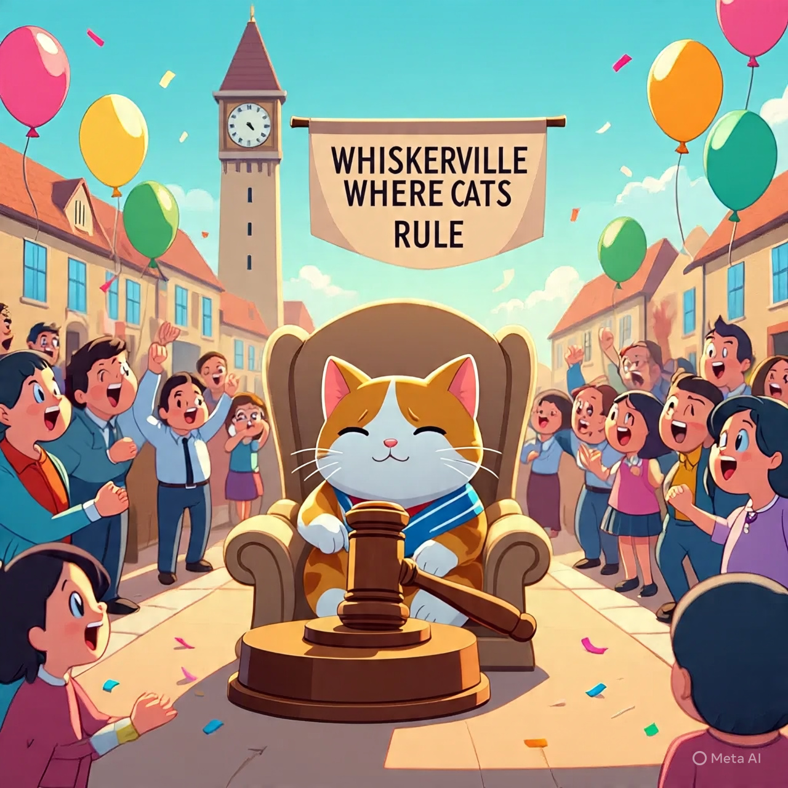
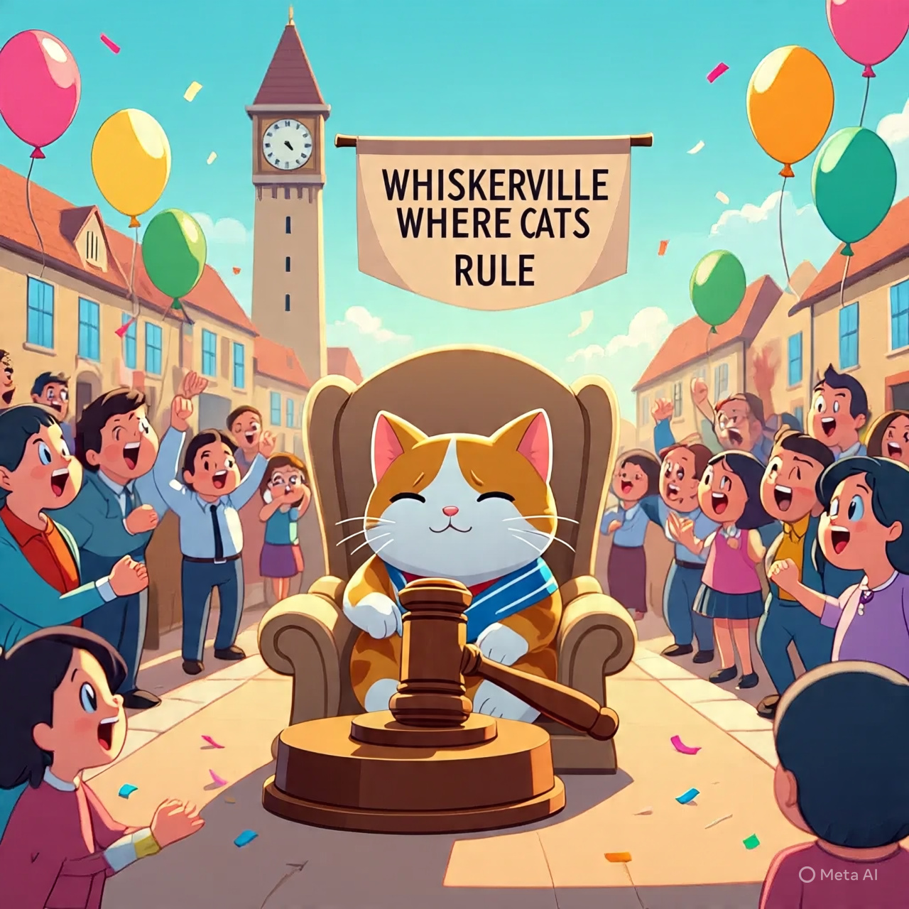

1. Local Man Claims He Can Predict Weather by His Knee Pain — Meteorologists Confused
A man from Salem says his aching knee tells him when it’s going to rain. Scientists are still trying to figure out if it’s coincidence or ancient magic.
2.Cat Elected Mayor of Tiny Town, Promises More Naps and Treats
In a surprise election, the town of Whiskerville voted in a fluffy feline named Mr. Whiskers as mayor. The new mayor’s first decree: mandatory catnip breaks.
3. Breaking: Pizza Delivery Driver Saves the Day with Extra Cheese
During a minor power outage, one pizza delivery guy’s cheesy enthusiasm lit up the neighborhood — literally. Residents say the extra cheese made everything better.
4. Man Tries Talking to Plants, Claims They’re Ignoring Him
A local gardening enthusiast says he’s been chatting with his plants daily but suspects they’re giving him the silent treatment.
5. Traffic Jam Caused by Snail Race on Main Street
City officials baffled as a crowd gathered to watch a snail race, blocking rush hour traffic. The snails reportedly crossed the finish line after 3 hours.
6. New Study Finds Laughing Burns More Calories Than Running
Scientists reveal you might skip the gym if you just laugh hard enough. Local residents now competing in “laughathons” to shed extra pounds.
 
